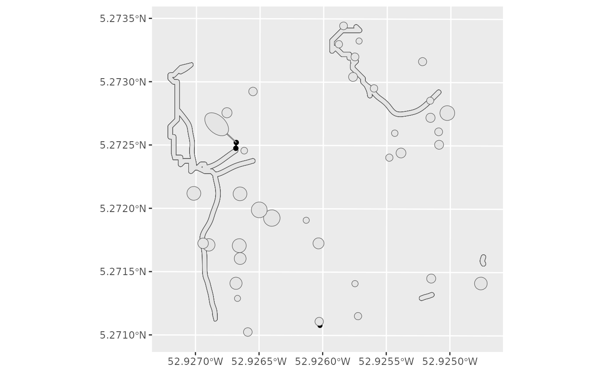

Simulates the tree (multipolygon) falling towards the trail or
not, at a given angle. If it has been decided to exploit fuel wood, the tree
crowns will be directed towards the trail if they can be accessed with a
grapple (see the GrappleLength argument of the
loggingparameters function). In other cases, the fall will be
made from the base of the tree towards the trail. The orientation of the
fall succeeds or fails according to a Bernoulli law where the probability of
success is by default 60%, and can be changed with the
advancedloggingparameters argument.
Usage
felling1tree(
dat,
fuel,
winching,
directionalfelling,
maintrailsaccess,
scndtrail,
FutureReserveCrowns,
advancedloggingparameters = loggingparameters()
)Arguments
- dat
1 row data.frame with columns: Xutm, Yutm, CrownDiameter, CrownHeight, DBH, TrunkHeight, TreeHeight, TreeFellingOrientationSuccess
- fuel
Fuel wood exploitation: no exploitation = "0", exploitation of damage and unused part of logged trees for fuel = "1", exploitation of hollow trees, damage and and unused part of the log for fuel = "2" If fuel wood exploitation (fuel = "1" or "2") the tree will be recovered from the crown with a grapple if possible (respected grapple conditions). If not, recovery at the foot with a cable at an angle to the trail. Avoid future/reserve trees if chosen.
- winching
"0": no cable or grapple (trail to tree foot) "1": only cable (default = 40m) "2": grapple (default = 6m) + cable (grapple priority) If grapple + cable (winching = "2") without fuel wood (fuel = "0") recovery of the tree foot with grapple if possible (respected grapple conditions) otherwise with cable with angle to the trail. Avoidance of future/reserves if chosen.
- directionalfelling
Directional felling = "0": only to direct the foot of the tree towards the trail "1": to direct the foot of the tree towards the trail + to avoid damage to future and reserve trees if possible "2": to avoid damage to future and reserve trees if possible + orientation angle to the trail. Among the 2 possible angle positions, the position that favours the return to the main trail should be chosen. The angle to the trail is favoured to avoid future/reserve trees.
- maintrailsaccess
Main trails access points (sf)
- scndtrail
Secondary trails (sf)
- FutureReserveCrowns
Future/reserve trees crown (sf)
- advancedloggingparameters
Other parameters of the logging simulator
loggingparameters(list)
Value
A list with: FallenTree: a sfc_MULTIPOLYGON of the tree oriented according to the chosen scenario. Foot: a POINT for the base of the tree (the rotation fixed point). NearestPoints: a sfc_LINESTRING for the shortest path from the base of the tree to the nearest trail, Trail: the union of the main and the secondary trails. TrailPt: the POINT on the Trail closest to the location of the tree.
Examples
data(SecondaryTrails)
# create an object with future/reserve crowns only
FutureReserveCrowns <- SecondaryTrails$inventory %>%
dplyr::filter(LoggingStatus == "future" | LoggingStatus == "reserve") %>%
createcanopy() %>% # create all inventory crowns in the 'Crowns' column
getgeometry(Crowns)
dat <- SecondaryTrails$inventory %>%
dplyr::filter(Selected == "1") %>%
dplyr::select(idTree,DBH,TrunkHeight,TreeHeight,CrownHeight,
CrownDiameter,Selected, Xutm, Yutm) %>%
dplyr::sample_n(1) %>% # just 1 row (1 tree)
# force the orientation success for the exemple
tibble::add_column(TreeFellingOrientationSuccess = "1")
rslt <- felling1tree(dat,
fuel = "0", winching = "0", directionalfelling = "0",
maintrailsaccess = SecondaryTrails$MainTrailsAccess,
scndtrail = SecondaryTrails$SmoothedTrails,
FutureReserveCrowns = FutureReserveCrowns,
advancedloggingparameters = loggingparameters())
#> Warning: attribute variables are assumed to be spatially constant throughout all geometries
library(ggplot2)
ggplot() +
geom_sf(data = sf::st_set_crs(sf::st_sfc(rslt$Foot),
sf::st_crs(SecondaryTrails$MainTrailsAccess))) +
geom_sf(data = sf::st_set_crs(sf::st_as_sf(rslt$Trail),
sf::st_crs(SecondaryTrails$MainTrailsAccess))) +
geom_sf(data = rslt$NearestPoints) +
geom_sf(data = sf::st_set_crs(sf::st_sfc(rslt$TrailPt),
sf::st_crs(SecondaryTrails$MainTrailsAccess))) +
geom_sf(data = sf::st_set_crs(rslt$FallenTree,
sf::st_crs(SecondaryTrails$MainTrailsAccess))) +
geom_sf(data = sf::st_set_crs(FutureReserveCrowns,
sf::st_crs(SecondaryTrails$MainTrailsAccess))) # set a crs
